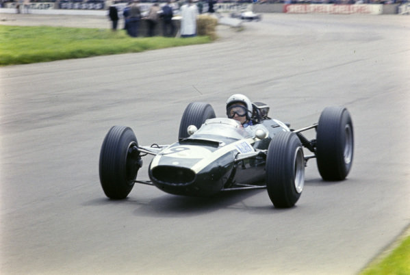
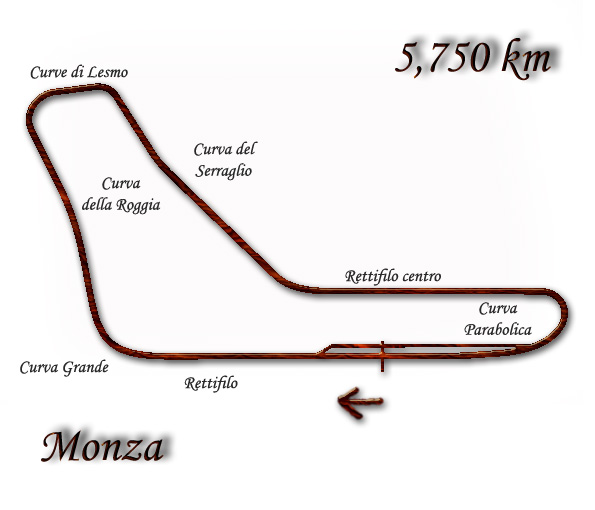

1965

Il quindicesimo campionato mondiale di Formula 1, compiuto all'Autodromo Nazionale di Monza in Italia, fu stato vinto da Jackie Stewart, che correva su una BRM .
|  |
Il campionato mondiale di Formula 1 1965 organizzato dalla FIA è stato, nella storia della categoria, il 16° ad assegnare il Campionato Piloti e l'8° ad assegnare il Campionato Costruttori. È iniziato il 1º gennaio e terminato il 24 ottobre, dopo 10 gare. |
Scuderie più importanti che hanno partecipato:
- Mercedes Benz
- Maserati
- Ferrari
- Alfa Romeo
- Lotus
- Cooper
- BRM
HOME
Tutti i diritti sono riservati
Sito realizzato da Boniotti Elisa, Lucchini Davide, Tassone Thomas